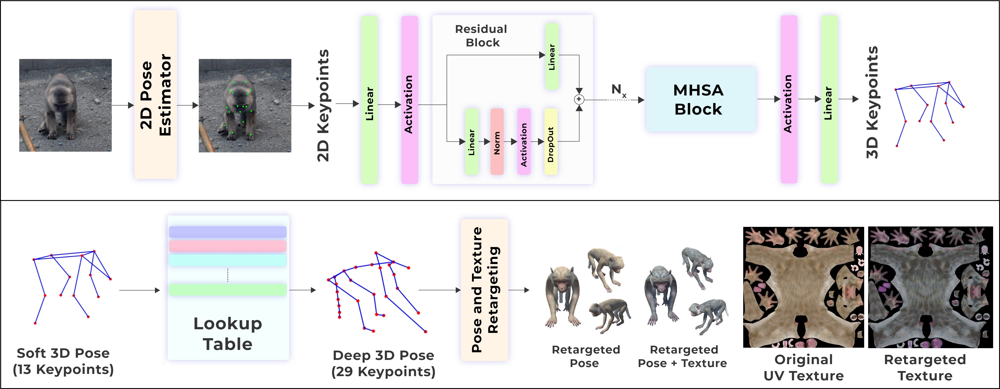

Paper
Paper L3D-Pose Dataset
L3D-Pose DatasetAbstract
While 2D pose estimation has advanced our ability to interpret body movements in animals and primates, it is limited by the lack of depth information, constraining its application range. 3D pose estimation provides a more comprehensive solution by incorporating spatial depth, yet creating extensive 3D pose datasets for animals is challenging due to their dynamic and unpredictable behaviours in natural settings. To address this, we propose a hybrid approach that utilizes rigged avatars and the pipeline to generate synthetic datasets to acquire the necessary 3D annotations for training. Our method introduces a simple attention-based MLP network for converting 2D poses to 3D, designed to be independent of the input image to ensure scalability for poses in natural environments. Additionally, we identify that existing anatomical keypoint detectors are insufficient for accurate pose retargeting onto arbitrary avatars. To overcome this, we present a lookup table based on a deep pose estimation method using a synthetic collection of diverse actions rigged avatars perform. Our experiments demonstrate the effectiveness and efficiency of this lookup table-based retargeting approach. Overall, we propose a comprehensive framework with systematically synthesized datasets for lifting poses from 2D to 3D and then utilize this to re-target motion from wild settings onto arbitrary avatars.
L3D-Pose Deep Macaque Dataset
L3D-Pose Deep Horse Dataset
Model Architecture and Workflow
For a given natural image, we first use pre-trained 2D pose estimation techniques to obtain 2D keypoints in the image. Our attention-based simple MLP architecture, trained on a synthetic dataset, effectively lifts these normalised 2D keypoints into a partial soft 3D pose, as illustrated at the top. We then match this partial 3D pose to the closest deep pose from a look-up table, which includes a diverse set of 3D poses derived from synthetic motion sequences. The Deep 3D Pose provides the necessary information to transfer the pose from the image onto an avatar model, as demonstrated in the bottom.
Results : 2D to 3D Pose Lifting and Retargeting
Citations
@article{debnath2025l3d,
title={L3D-Pose: Lifting Pose for 3D Avatars from a Single Camera in the Wild},
author={Debnath, Soumyaratna and Katti, Harish and Verma, Shashikant and Raman, Shanmuganathan},
journal={arXiv preprint arXiv:2501.01174},
year={2025}
}@misc{soumyaratna_debnath_harish_katti_shashikant_verma_shanmuganathan_raman_2024,
title={L3D-Pose Dataset},
url={https://www.kaggle.com/ds/6157680},
DOI={10.34740/KAGGLE/DS/6157680},
publisher={Kaggle},
author={Soumyaratna Debnath and Harish Katti and Shashikant Verma and Shanmuganathan Raman},
year={2024}
}